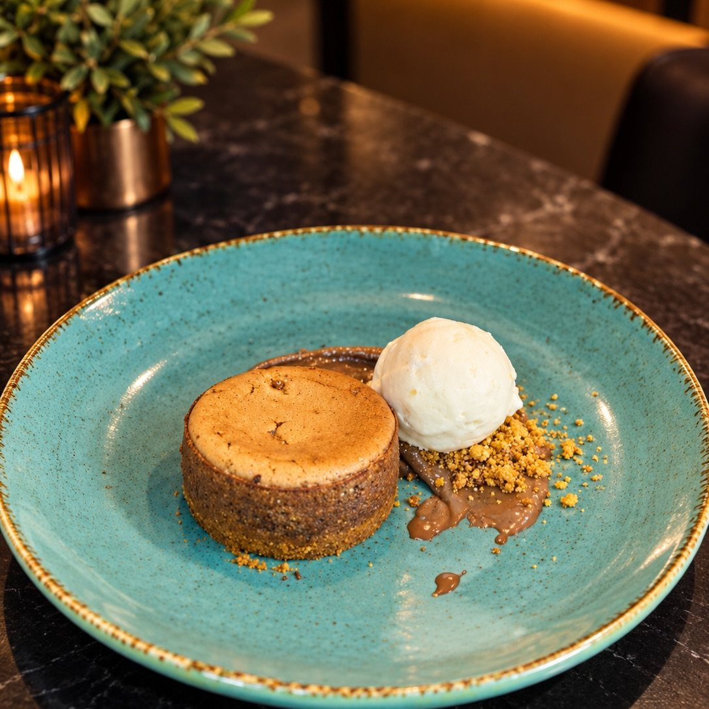

Pase 8 de 9
Almería
El desierto y el invernadero
La más seca de Andalucía, la última del mapa y la que cierra el recorrido. Almería es desierto, invernadero y un mar azul sin casi nadie.

Postre de la casa.
El plato
Un toque dulce de Almería
Cierra el recorrido por el sur un buñuelo caliente de crema de vainilla.
El pase de Almería es dulce: buñuelo con crema de vainilla y mousse de chocolate blanco. Cierra el recorrido por las ocho provincias.
Buñuelo con crema de vainilla y mousse de chocolate blanco.
Alérgenos gluten · huevo · lácteos
La historia
Al-Mariyya, el espejo del mar
Almería nació en el siglo X como puerto del Califato de Córdoba, y su nombre árabe se suele traducir como «el espejo del mar» o «la atalaya». De entonces es su Alcazaba, una de las fortalezas musulmanas más grandes de España. Siglos después llegó la otra riqueza: las minas de la Sierra Almagrera, que trajeron gente, dinero y, como en Jaén, un cante.
La Alcazaba se levantó para vigilar la ciudad y el puerto, y casi mil años después sigue mirando al mar.
El arte
El taranto
El taranto es el palo almeriense, hermano de la taranta de la que toma el nombre, pero con el compás algo más marcado. También nació en las minas: las de la Sierra Almagrera. Es, con Jaén, el otro extremo de la ruta minera del flamenco, y el que cierra el círculo de este menú.
Jaén y Almería, en los dos extremos del este andaluz, comparten el origen de este cante: el de quienes trabajaban bajo la tierra.
El habla
Gurullos
Pasta artesanal, hecha a mano en bolitas pequeñas, con la que se guisa con conejo o con pulpo. Comida de campo y de invierno, en la provincia más seca de Europa.
«Gurullos con conejo, de cuchara y con pan».
La costumbre
El desierto y el cine
CuándoTodo el año
En Tabernas, el único desierto de Europa, se rodaron los spaghetti westerns y media historia del cine de aventuras. Al lado, el mar de plástico de los invernaderos da de comer a media Europa durante el invierno. Dos paisajes imposibles, pegados.
Y a pocos kilómetros, el Cabo de Gata, de los pocos tramos de costa sin construir del Mediterráneo español: calas, volcanes antiguos y salinas.
Las ocho, de una sentá
Almería es el pase número 8 del menú degustación. El recorrido entero son las ocho provincias y un homenaje final que no pertenece a ninguna.